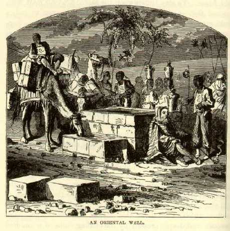

A Well in the Holy LandWe descended to the Plain again, and halted a moment at a well -- of Abraham's time, no doubt. It was in a desert place. It was walled three feet above ground with squared and heavy blocks of stone, after the manner of Bible pictures. Around it some camels stood, and others knelt. There was a group of sober little donkeys with naked, dusky children clambering about them, or sitting astride their rumps, or pulling their tails. Tawny, black-eyed, barefooted maids, arrayed in rags and adorned with brazen armlets and pinchbeck ear-rings, were poising waterjars upon their heads, or drawing water from the well. A flock of sheep stood by, waiting for the shepherds to fill the hollowed stones with water, so that they might drink -- stones which, like those that walled the well, were worn smooth and deeply creased by the chafing chins of a hundred generations of thirsty animals. Picturesque Arabs sat upon the ground, in groups, and solemnly smoked their longstemmed chibouks. Other Arabs were filling black hog-skins with water -- skins which, well filled, and distended with water till the short legs projected painfully out of the proper line, looked like the corpses of hogs bloated by drowning. Here was a grand Oriental picture which I had worshiped a thousand times in soft, rich steel engravings! But in the engraving there was no desolation; no dirt; no rags; no fleas; no ugly features; no sore eyes; no feasting flies; no besotted ignorance in the countenances; no raw places on the donkeys' backs; no disagreeable jabbering in unknown tongues; no stench of camels; no suggestion that a couple of tons of powder placed under the party and touched off would heighten the effect and give to the scene a genuine interest and a charm which it would always be pleasant to recall, even though a man lived a thousand years. Oriental scenes look best in steel engravings. I cannot be imposed upon any more by that picture of the Queen of Sheba visiting Solomon. I shall say to myself, You look fine, Madam but your feet are not clean and you smell like a camel. |